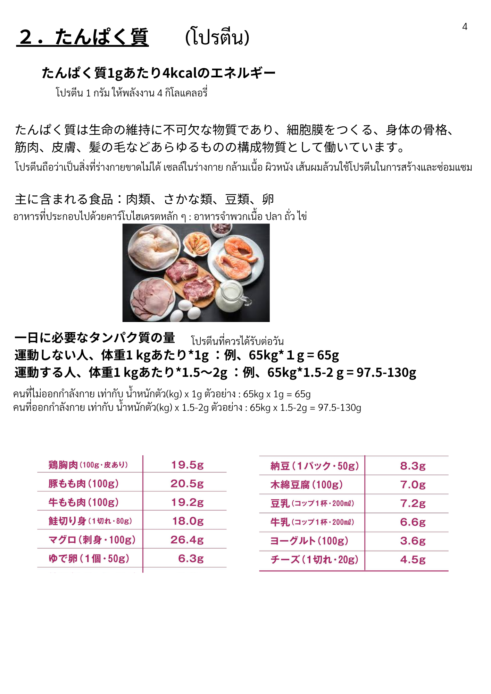
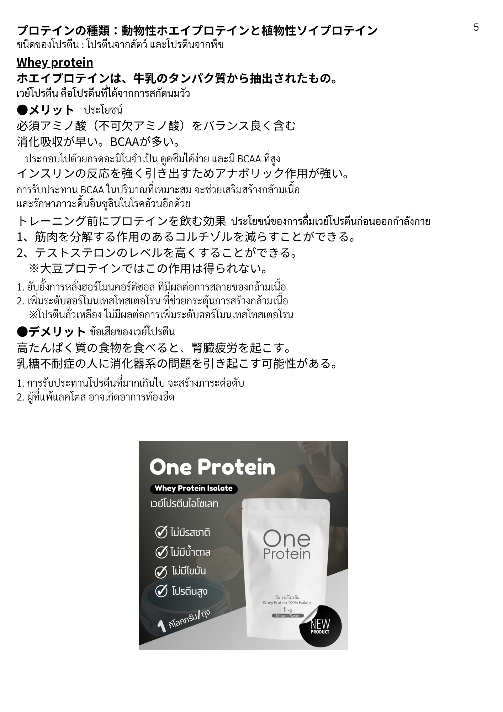
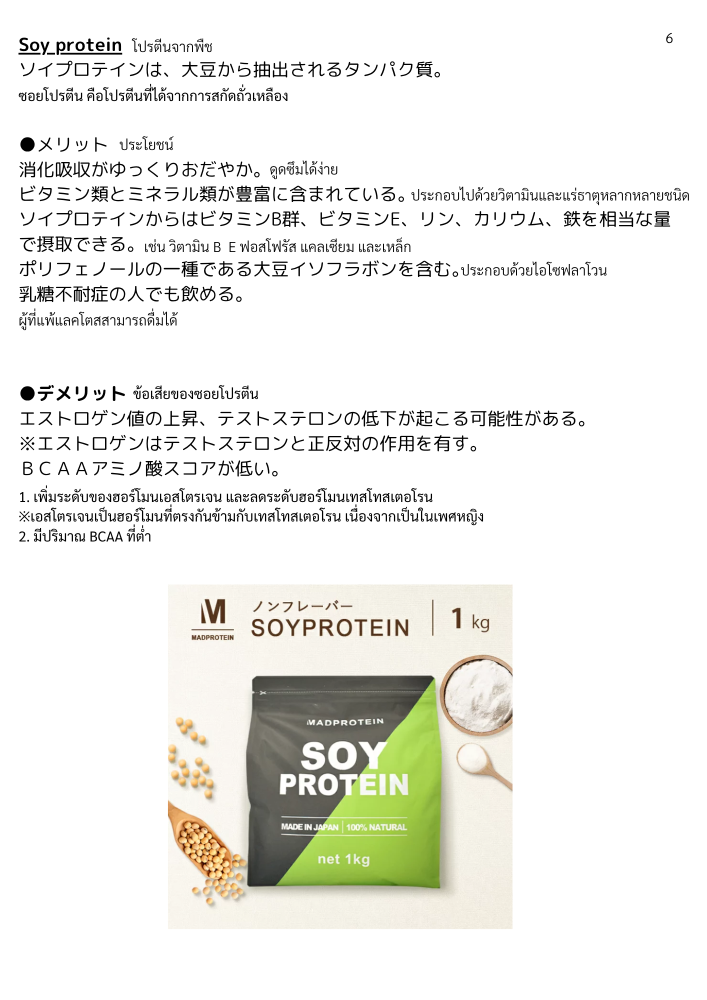
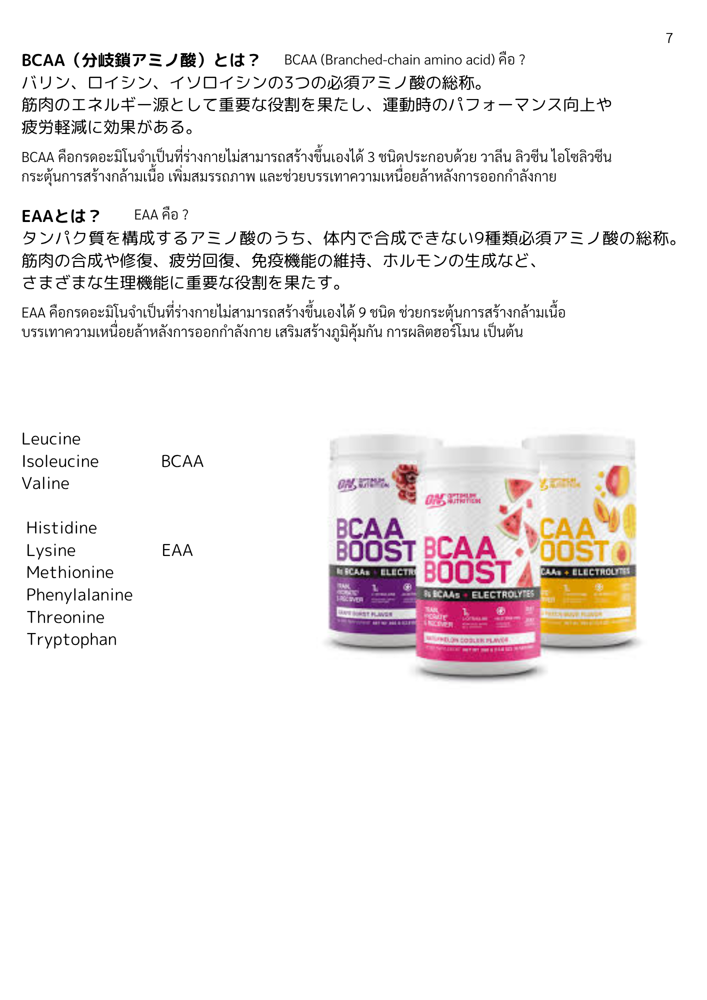

| 漢字 | ひらがな | ความหมาย (ไทย) |
|---|---|---|
| たんぱく質 | たんぱくしつ | โปรตีน |
| 栄養素 | えいようそ | สารอาหาร |
| 生命 | せいめい | ชีวิต |
| 維持 | いじ | การคงไว้ / รักษา |
| 不可欠 | ふかけつ | ขาดไม่ได้ / จำเป็น |
| 構成 | こうせい | องค์ประกอบ / โครงสร้าง |
| 物質 | ぶっしつ | สาร / วัตถุ |
| 必要 | ひつよう | จำเป็น / ที่ต้องการ |
| 量 | りょう | ปริมาณ |
| 体重 | たいじゅう | น้ำหนักตัว |
| 漢字 | ひらがな | ความหมาย (ไทย) |
|---|---|---|
| 身体 | からだ | ร่างกาย |
| 細胞膜 | さいぼうまく | เยื่อหุ้มเซลล์ |
| 骨格 | こっかく | โครงร่าง / โครงกระดูก |
| 筋肉 | きんにく | กล้ามเนื้อ |
| 皮膚 | ひふ | ผิวหนัง |
| 髪・毛 | かみ・け | ผม・ขน |
| 腎臓 | じんぞう | ไต |
| 体内 | たいない | ภายในร่างกาย |
| 漢字 | ひらがな | ความหมาย (ไทย) |
|---|---|---|
| 肉類 | にくるい | เนื้อสัตว์ (ประเภทเนื้อ) |
| 魚類 | さかなるい | ปลา (ประเภทปลา) |
| 豆類 | まめるい | ถั่ว (ประเภทถั่ว) |
| 卵 | たまご | ไข่ |
| 鶏胸肉 | とりむねにく | อกไก่ |
| 豚もも肉 | ぶたももにく | สะโพกหมู |
| 牛もも肉 | ぎゅうももにく | สะโพกวัว |
| 鮭 | さけ | ปลาแซลมอน |
| 切り身 | きりみ | ชิ้นปลา (ฟิเล่) |
| マグロ | まぐろ | ปลาทูน่า |
| 刺身 | さしみ | ซาชิมิ |
| ゆで卵 | ゆでたまご | ไข่ต้ม |
| 納豆 | なっとう | นัตโตะ (ถั่วเหลืองหมัก) |
| 木綿豆腐 | もめんどうふ | เต้าหู้แข็ง (โมเมน) |
| 豆乳 | とうにゅう | นมถั่วเหลือง |
| 漢字 | ひらがな | ความหมาย (ไทย) |
|---|---|---|
| 種類 | しゅるい | ชนิด / ประเภท |
| 動物性 | どうぶつせい | จากสัตว์ (เนื้อสัตว์) |
| 植物性 | しょくぶつせい | จากพืช |
| 牛乳 | ぎゅうにゅう | นมวัว |
| 大豆 | だいず | ถั่วเหลือง |
| 抽出 | ちゅうしゅつ | การสกัด |
| 質 | しつ | คุณภาพ |
| 豊富 | ほうふ | อุดมสมบูรณ์ / มีมาก |
| 漢字 | ひらがな | ความหมาย (ไทย) |
|---|---|---|
| 必須アミノ酸 | ひっすあみのさん | กรดอะมิโนจำเป็น |
| 分岐鎖アミノ酸 | ぶんきさあみのさん | กรดอะมิโนสายโซ่กิ่ง (BCAA) |
| 総称 | そうしょう | ชื่อรวม / เรียกรวม |
| ビタミン類 | びたみんるい | กลุ่มวิตามิน |
| ミネラル類 | みねらるるい | กลุ่มแร่ธาตุ |
| 鉄 | てつ | ธาตุเหล็ก |
| 大豆イソフラボン | だいずいそふらぼん | ไอโซฟลาโวนถั่วเหลือง |
| インスリン | いんすりん | อินซูลิน |
| テストステロン | てすとすてろん | เทสโทสเตอโรน |
| エストロゲン | えすとろげん | เอสโตรเจน |
| コルチゾール | こるちぞーる | คอร์ติซอล |
| 漢字 | ひらがな | ความหมาย (ไทย) |
|---|---|---|
| 消化 | しょうか | การย่อยอาหาร |
| 吸収 | きゅうしゅう | การดูดซึม |
| 合成 | ごうせい | การสังเคราะห์ |
| 分解 | ぶんかい | การสลาย |
| 生成 | せいせい | การสร้าง / ผลิต |
| 修復 | しゅうふく | การซ่อมแซม |
| 摂取 | せっしゅ | การบริโภค / รับเข้าร่างกาย |
| 補充 | ほじゅう | การเสริม / เติมเต็ม |
| 作用 | さよう | การออกฤทธิ์ / ผล |
| 反応 | はんのう | ปฏิกิริยา |
| 役割 | やくわり | บทบาท / หน้าที่ |
| 漢字 | ひらがな | ความหมาย (ไทย) |
|---|---|---|
| 運動 | うんどう | การออกกำลังกาย |
| 向上 | こうじょう | การเพิ่มขึ้น / พัฒนา |
| 疲労 | ひろう | ความเหนื่อยล้า |
| 軽減 | けいげん | การลดลง / บรรเทา |
| 効果 | こうか | ผล / ประสิทธิภาพ |
| エネルギー源 | えねるぎーげん | แหล่งพลังงาน |
| 免疫機能 | めんえききのう | ระบบภูมิคุ้มกัน |
| 生理機能 | せいりきのう | การทำงานของร่างกาย |
| 重要 | じゅうよう | สำคัญ |
| 漢字 | ひらがな | ความหมาย (ไทย) |
|---|---|---|
| 上昇 | じょうしょう | การเพิ่มขึ้น |
| 低下 | ていか | การลดลง |
| 減らす | へらす | ทำให้ลดลง |
| 負担 | ふたん | ภาระ (ต่อร่างกาย) |
| 乳糖不耐症 | にゅうとうふたいしょう | ภาวะแพ้แลคโตส |
| 消化器系 | しょうかきけい | ระบบย่อยอาหาร |
| 問題 | もんだい | ปัญหา |
| 可能性 | かのうせい | ความเป็นไปได้ |
| 正反対 | せいはんたい | ตรงกันข้าม |